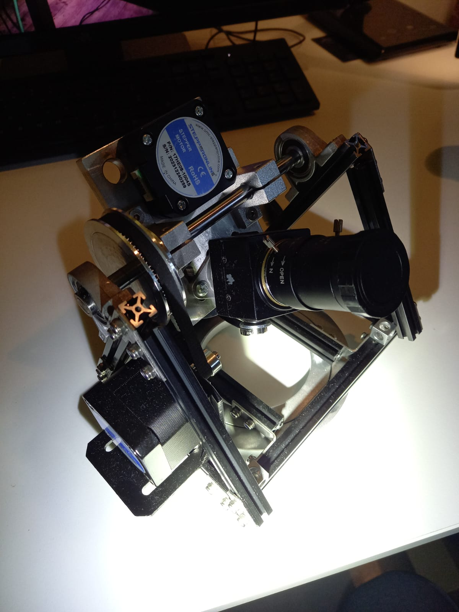
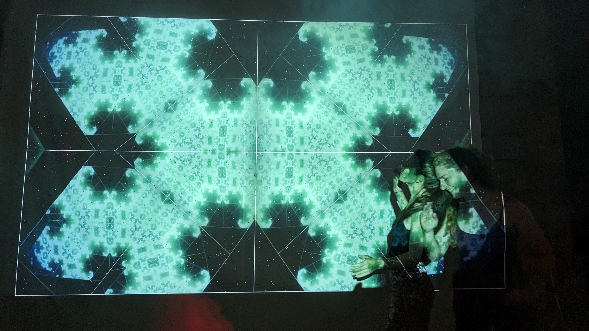
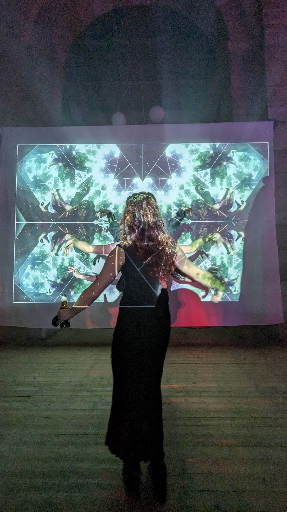
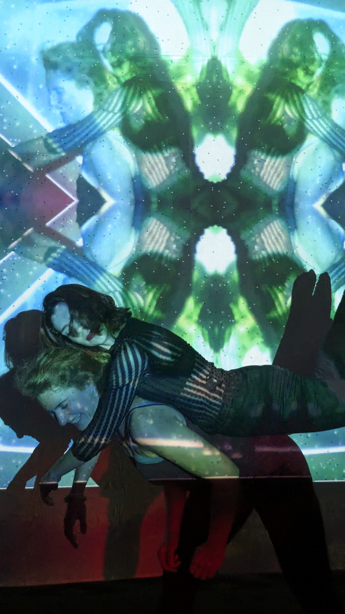
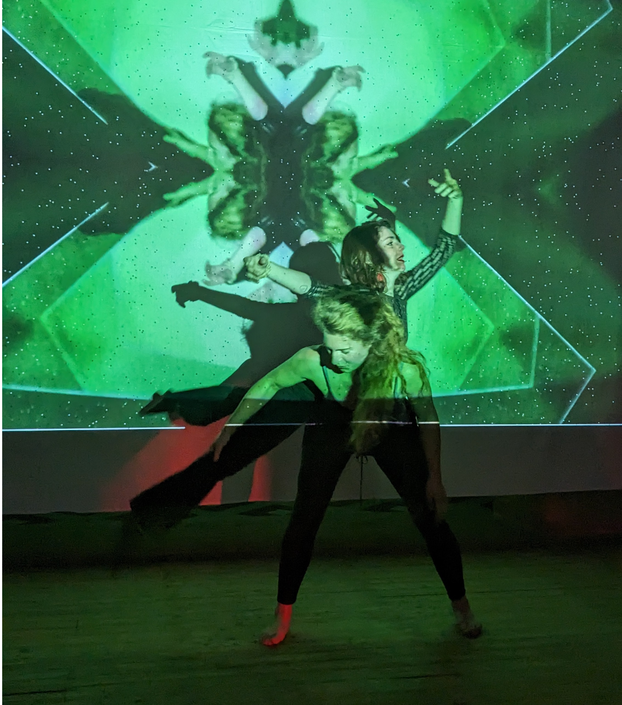
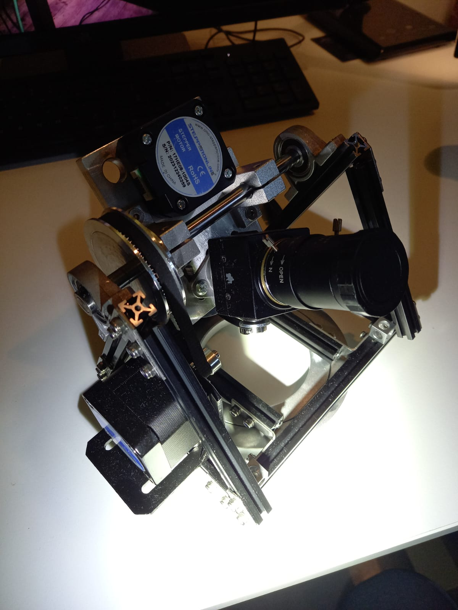
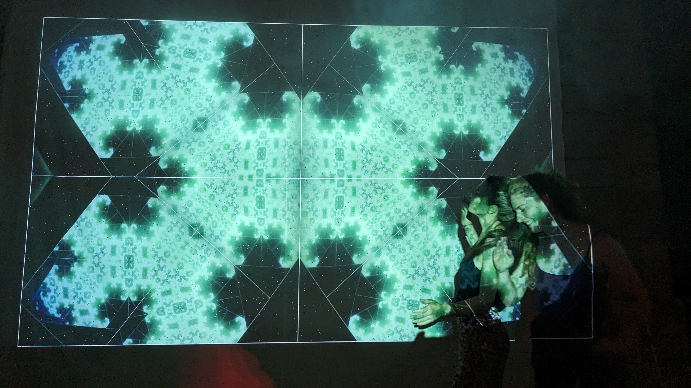
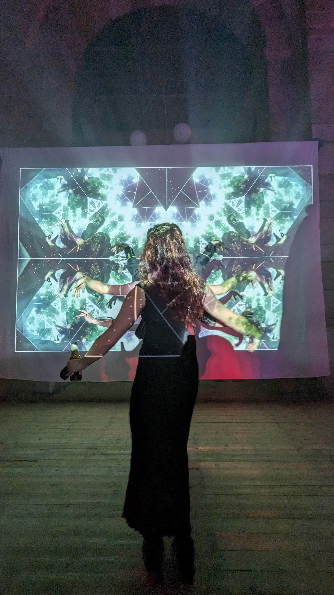
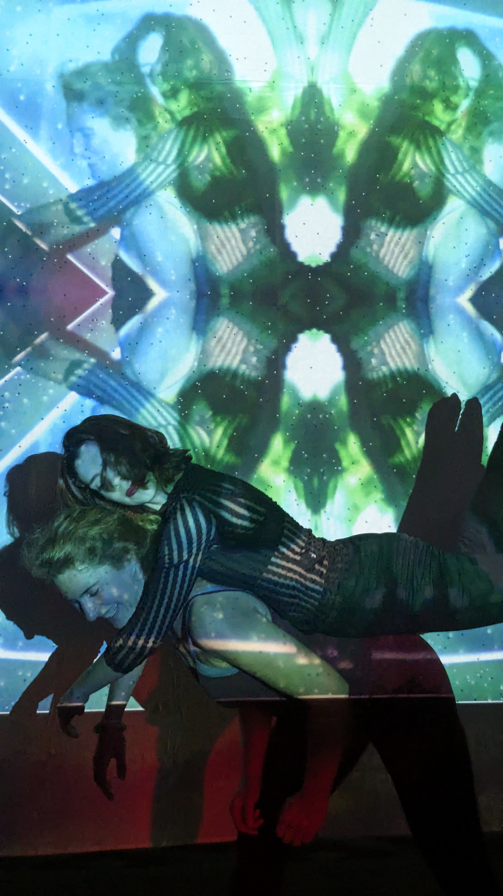
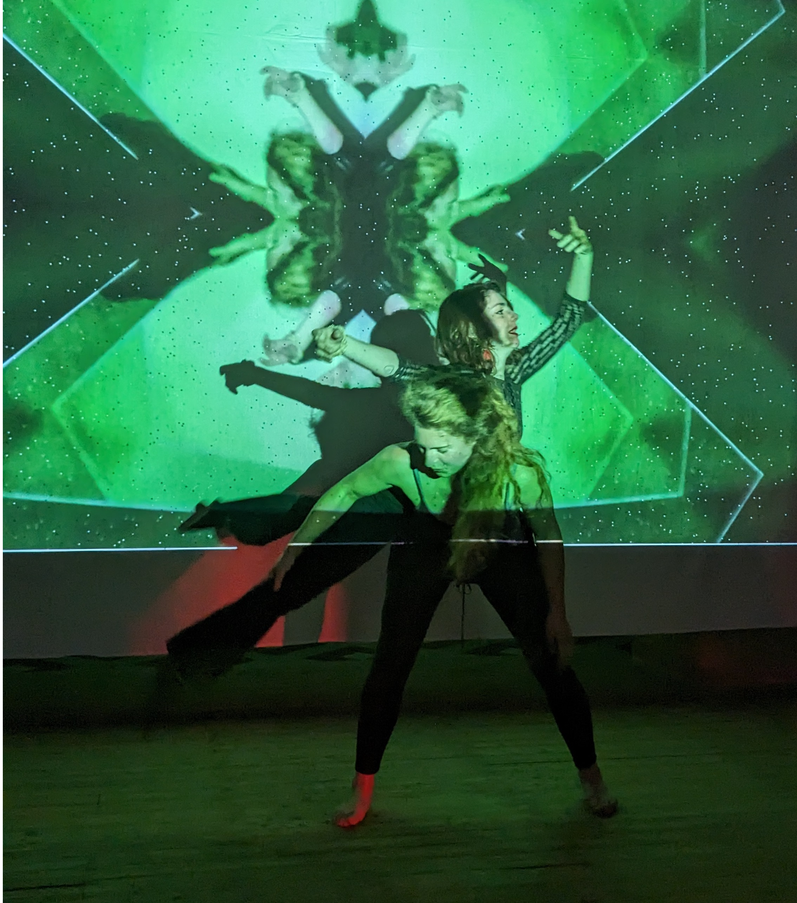

*
Hey garden lovers, I quickly whipped up this slightly hidden page and lowkey demo video to show off my interactive fractal inducing light art projection installation for the synthesia application.
As you can see I very much lack great documentation for it, which is something I hope to change this season. Should give you a rough idea.
Most of this footage was taken during my birthday party a few weeks ago, which I conceptualized and built up and I'm reasonably proud of it (:
The projection is created by pointing a camera at its own output, creating a feedback loop. In addition, the image is mirrored twice. That's it. All the fractals. And when you step between camera and projection you become part of the loop. Ever been a thousand headed tree?
I also built a 3-axis robot that can run on auto mode or be manually controlled. It holds the camera and changes the angle to go down different fractal pathways. The control panel (with all kinds of funky ways of interacting) as well as the glorious version 2 (see image below, the slightly more kinky bot) is currently in progress, to be completed by the end of July.
 








